Setting up FlashDevelop
FlashDevelop is a standalone IDE for working with ActionScript 3.AS3 is used to make things like Flash games; you may remember playing these games in high school!
Unlike Adobe Flash itself, FlashDevelop is free! Let's set it up!
1. Download FlashDevelop
Go ahead and grab FlashDevelop.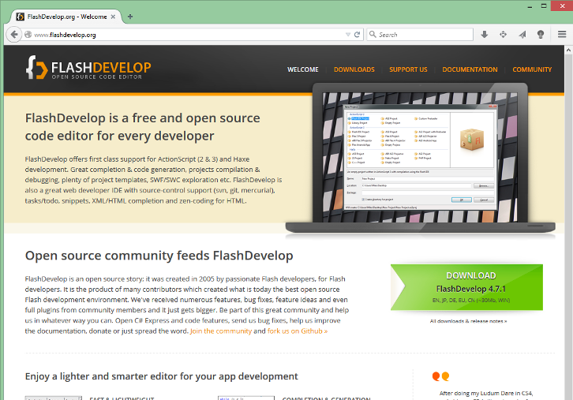
After starting the installer, you might encounter this message.
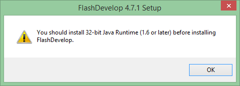
If you don't have Java, we can grab it easily.
If you do have it, hurray! Skip to step 3.
2. Download Java, if needed
Head over to Oracle's webpage and grab a copy of the Java Development Kit, or JDK.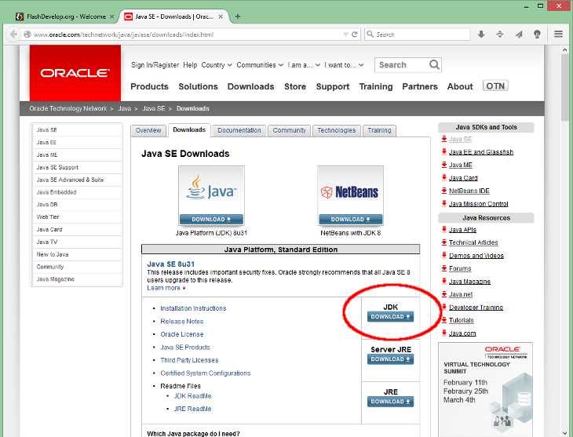
This is the right choice if you're running a 64-bit version of Windows.
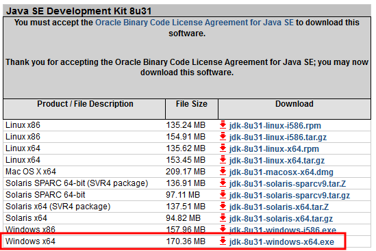
3. Finish installing FlashDevelop
When you're done installing, go ahead and open FlashDevelop. It's easiest if you just click on the FlashDevelop project file, in your local repository's files.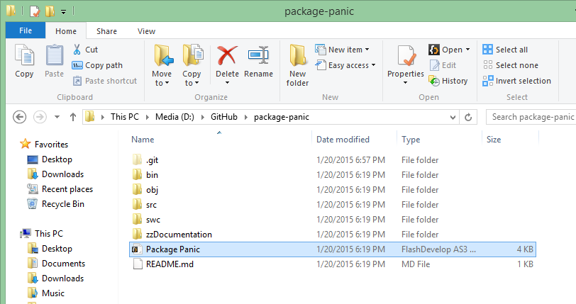
Upon startup, you should see a software installation wizard.
Check Flex SDK and Flash Player (SA).
We need the SDK to compile things, and Flash Player to run our outputted .swf files!
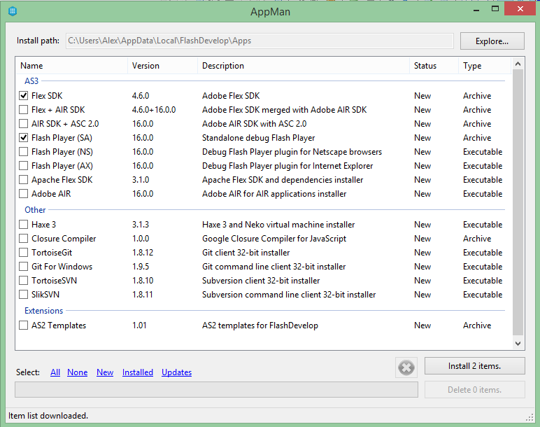
Be sure to remember the install path! We'll need it later.
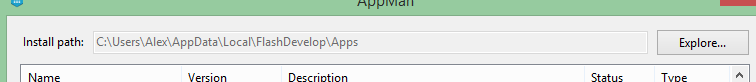
One last step. We need to tell FD where the SDK is.
With Package Panic's project open, navigate to:
Project -> Properties...
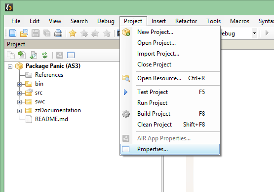
Select the SDK tab, and choose Manage... under Installed SDK(s).
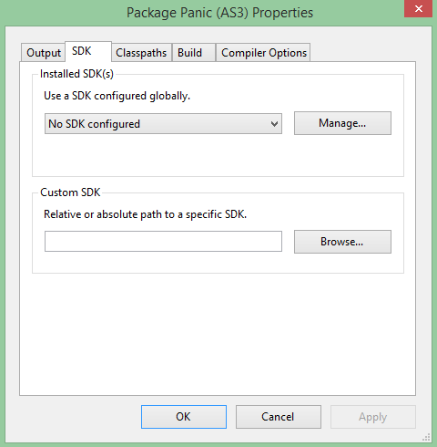
Under AS3Context, click on the ... next to Installed Flex SDKs, then choose Add and the ... under Path.
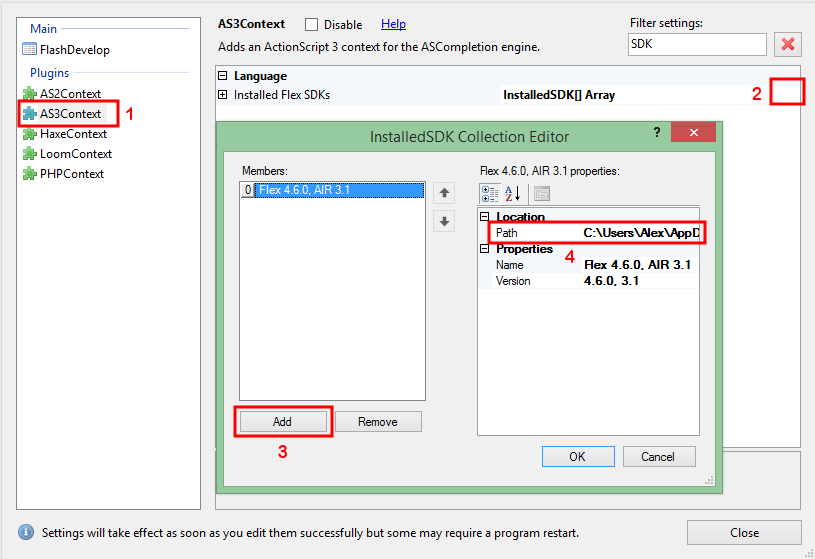
Navigate to the install path for the Flex SDK (that you should have remembered from above) and pick it.
Mine was found at:
4. Test it!
Finally. Now just hit that little "Play" button near the top, and see if it works!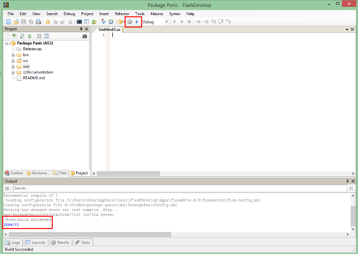
Georgia Institute of Technology
Video Game Development Club
January 20, 2015